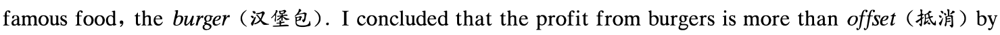

2020年7月大学英语四级考试真题
Part I Writing ( 30 minutes)
Directions: For this part, you are allowed 30 minutes to write an essay on the use of translation apps. You can start your essay with the sentence "The use of translation apps is becoming increasingly popular." You should write at least 120 words but no more than 180 words.
Part II Listening Comprehension ( 25 minutes)
Section A
Directions: In this section, you will hear three news reports. At the end of each news report, you will hear two or three questions. Both the news report and the questions will be spoken only once. After you hear a question, you must choose the best answer from the four choices marked A), B), C) and D). Then mark the corresponding letter on Answer Sheet 1 with a single line through the centre.
Questions 1 and 2 are based on the news report you have just heard.
1.
2.
Questions 3 and 4 are based on the news report you have just heard.
3.
4.
Questions 5 to 7 are based on the news report you have just heard.
5.
6.
7.
Section B
Directions: In this section, you will hear two long conversations. At the end of each conversation, you will hear four questions. Both the conversation and the questions will be spoken only once. After you hear a question, you must choose the best answer from the four choices marked A), B), C) and D). Then mark the corresponding letter on Answer Sheet 1 with a single line through the centre.
Questions 8 to 11 are based on the conversation you have just heard.
9.
10.
11.
Questions 12 to 15 are based on the conversation you have just heard.
12.
13.
14.
Section C
Directions: In this section, you will hear three passages. At the end of each passage, you will hear three or four questions. Both the passage and the questions will be spoken only once. After you hear a question , you must choose the best answer from the four choices marked A ) , B) , C ) and D ) . Then mark the corresponding letter on Answer Sheet 1 with a single line through the centre.
Questions 16 to 18 are based on the passage you have just heard.
16.
17.
18.
Questions 19 to 21 are based on the passage you have just heard.
19.
20.
21.
Questions 22 to 25 are based on the passage you have just heard.
22.
23.
24.
25.
Part ][ Reading Comprehension ( 40 minutes)
Section A
Directions: In this section, there is a passage with ten blanks. You are required to select one word for each blank from a list of choices given in a word bank following the passage. Read the passage through carefully before making your choices. Each choice in the bank is identified by a letter. Please mark the corresponding letter for each item on Answer Sheet 2 with a single line through the centre. You may not use any of the words in the bank more than once.
"Science and everyday life cannot and should not be separated. " Those were the words uttered by pioneering British scientist Rosalind Franklin, who firmly believed that the pursuit of science should be
26 to all.
As a woman working in the first half of the 20th century, Franklin's contributions to some of the greatest scientific discoveries of our time including the structure of DNA-were sadly 27 in her ----lifetime.
More than 60 years after Franklin's death, we are ----28 living in a different world, where women play an important part in every echelon (阶层) of our society-not least in science, innovation, higher education and research. UK universities are world leaders when it comes to advancing and
29 gender equality.
In the past decade, we have seen a 30 increase in England in the number of women accepted ----on to full-time undergraduate degrees in science, technology, engineering and maths (Stem subjects) . And in the last academic year, women 31 for more than half of all Stem postgraduates at UK universities
本页部分文字层异常，已保留原图文字区域；这些区域随窗口缩放，暂不能重新换行或复制。
Data shows us the 32 to success gets harder for women to climb the further up they go. Although women make up the majority of undergraduates in our universities, just under half of academic staff are female. At 33 levels, only a quarter of professors are women, and black women make up less than 2% of all female academic staff.
There are also stark differences in pay across grades. The gender pay gap based on median salaries across the sector in 2016 - 201 7 was 13. 7 % , 34 there is still some way to go to ensure women are rising through the ranks to higher grade positions and being paid 35
Section B
Directions: In this section, you are going to read a passage with ten statements attached to it. Each statement contains information given in one of the paragraphs. Identify the paragraph from which the information is derived. You may choose a paragraph more than once. Each paragraph is marked with a letter. Answer the questions by marking the corresponding letter on Answer Sheet 2.
How to Eat Well
A) Why do so many Americans eat tons of processed food, the stuff that is correctly called junk (垃圾) and should really carry warning labels?
B) It's not because fresh ingredients are hard to come by. Supermarkets offer more variety than ever, and there are over four times as many farmers' markets in the US as there were 20 years ago. Nor is it for lack of available information. There are plenty of recipes (食谱), how-to videos and cooking classes available to anyone who has a computer, smartphone or television. If anything, the information is overwhelming.
C) And yet we aren't cooking. If you eat three meals a day and behave like most Americans, you probably get at least a third of your daily calories outside the home. Nearly two-thirds of us grab fast food once a week, and we get almost 25% of our daily calories from snacks. So we're eating out or taking in, and we don't sit down-or we do, but we hurry.
D) Shouldn't preparing-and consuming-food be a source of comfort, pride, health, well-being, relaxation,
task, especially when outsourcing it is so harmful?
E) When I talk about cooking, I'm not talking about creating elaborate dinner parties or three-day science projects. I'm talking about simple, easy, everyday meals. My mission is to encourage green hands and those lacking time or money to feed themselves. That means we need modest, realistic expectations, and we need to teach people to cook food that's good enough to share with family and friends.
F) Perhaps a return to real cooking needn't be far off. A recent Harris poll revealed that 79% of Americans say they enjoy cooking and 30% "love it"; 14% admit to not enjoying kitchen work and just 7% won't go near the stove at all. But this doesn't necessarily translate to real cooking, and the result of this survey shouldn't surprise anyone: 52% of those 65 or older cook at home five or more times per week; only a third of young people do.
G) Back in the 1950s most of us grew up in households where Mom cooked virtually every night. The intention to put a home-cooked meal on the table was pretty much universal. Most people couldn't afford to do otherwise.
本页部分文字层异常，已保留原图文字区域；这些区域随窗口缩放，暂不能重新换行或复制。
H) Although frozen dinners were invented in the '40s, their popularity didn't boom until televisions became popular a decade or so later. Since then, packaged, pre-prepared meals have been what's for dinner. The microwave and fast-food chains were the biggest catalysts , but the big food companies-which want to sell anything except the raw ingredients that go into cooking-made the home cook an endangered species.
I) Still, I find it strange that only a third of young people report preparing meals at home regularly. Isn't this the same crowd that rails against processed junk and champions craft cooking? And isn't this the generation who say they're concerned about their health and the well-being of the planet? If these are truly the values of many young people, then their behavior doesn't match their beliefs.
J) There have been half-hearted but well-publicized efforts by some food companies to reduce calories in their processed foods, but the Standard American Diet is still the polar opposite of the healthy, mostly plant based diet that just about every expert says we should be eating. Considering that the government's standards are not nearly ambitious enough, the picture is clear: by not cooking at home, we're not eating the right things, and the consequences are hard to overstate.
K) To help quantify ( i 1t) the costs of a poor diet, I recently tried to estimate this impact in terms of a most

the damage they cause in health problems and environmental harm.
L) Cooking real food is the best defense-not to mention that any meal you're likely to eat at home contains about 200 fewer calories than one you would eat in a restaurant.
M) To those Americans for whom money is a concern, my advice is simple: Buy what you can afford, and cook it yourself. The common prescription is to primarily shop the grocery store, since that's where fresh produce, meat and seafood, and dairy are. And to save money and still eat well you don't need local, organic ingredients; all you need is real food. I'm not saying local food isn't better; it is. But there is plenty of decent food in the grocery stores.
N) The other sections you should get to know are the frozen foods and the canned goods. Frozen produce is still produce; canned tomatoes are still tomatoes. Just make sure you're getting real food without tons of added salt or sugar. Ask yourself, would Grandma consider this food? Does it look like something that might occur in nature? It's pretty much common sense: you want to buy food, not unidentifiable foodlike objects.
0) You don't have to hit the grocery store daily, nor do you need an abundance of skill. Since fewer than half of Americans say they cook at an intermediate level and only 20% describe their cooking skills as advanced, the crisis is one of confidence. And the only remedy for that is practice. There's nothing mysterious about cooking the evening meal. You just have to do a little thinking ahead and redefine what qualifies as dinner. Like any skill, cooking gets easier as you do it more; every time you cook, you advance your level of skills. Someday you won't even need recipes. My advice is that you not pay attention to the number of steps and ingredients, because they can be deceiving. P) Time, I realize, is the biggest obstacle to cooking for most people. You must adjust your priorities to find time to cook. For instance, you can move a TV to the kitchen and watch your favorite shows while you're standing at the sink. No one is asking you to give up activities you like, but if you're watching food shows on TV, try cooking instead.
36. Cooking benefits people in many ways and enables them to connect with one another.
37. Abundant information about cooking is available either online or on TV.
本页部分文字层异常，已保留原图文字区域；这些区域随窗口缩放，暂不能重新换行或复制。
38. Young people do less cooking at home than the elderly these days.
39. Cooking skills can be improved with practice.
40. In the mid-20th century, most families ate dinner at home instead of eating out.
41. Even those short of time or money should be encouraged to cook for themselves and their family.
42. Eating food not cooked by ourselves can cause serious consequences.
43. To eat well and still save money, people should buy fresh food and cook it themselves.
44. We get a fairly large portion of calories from fast food and snacks.
45. The popularity of TV led to the popularity of frozen food.
Section C
Directions: Ther e ar e 2 passages in this section. Each passage is followed by some questions or unfinished statements. For each of them there ar e four choices marked A) , B) , C) and D). You should decide on the best choice and mark the corresponding letter on Answer Sheet 2 with a single line through the centr e.
Passage One
Questions 46 to 50 are based on the following passage.
The wallet is heading for extinction. As a day-to-day essential, it will die off with the generation who read print newspapers. The kind of shopping-where you hand over notes and count out change in return-now happens only in the most minor of our retail encounters, like buying a bar of chocolate or a pint of milk, from a corner shop. At the shops where you spend any real money, that money is increasingly abstracted. And this is more and more true, the higher up the scale you go. At the most cutting-edge retail stores-Victoria Beckham on Dover Street, for instance-you don't go and stand at any kind of cash register, when you decide to pay. The staff are equipped with iPads to take your payment while you relax on a sofa.
Which is nothing more or less than excellent service, if you have the money. But across society, the abstraction of the idea of cash makes me uneasy. Maybe I'm just old-fashioned. But earning money isn't quick or easy for most of us. Isn't it a bit weird that spending it should happen in half a blink (眨眼) of an eye? Doesn't a wallet-that time-honoured Friday-night feeling of pleasing, promising fatness-represent something that matters?
But I'll leave the economics to the experts. What bothers me about the death of the wallet is the change it represents in our physical environment. Everything about the look and feel of a wallet-the way the fastenings and materials wear and tear and loosen with age, the plastic and paper and gold and silver, and handwritten phone numbers and printed cinema tickets-is the very opposite of what our world is becoming. The opposite of a wallet is a smartphone or an iPad. The rounded edges, cool glass, smooth and unknowable as a pebble . Instead of digging through pieces of paper and peering into corners, we move our fingers left and right. No more counting out coins. Show your wallet, if you still have one. It may not be here much longer.
46. What is happening to the wallet?
本页部分文字层异常，已保留原图文字区域；这些区域随窗口缩放，暂不能重新换行或复制。
47. How are business transactions done in big modern stores?
48. What makes the author feel uncomfortable nowadays?
49. Why does the author choose to write about what's happening to the wallet?
50. What can we infer from the passage about the author?
Passage Two
Questions 51 to 55 are based on the following passage.
It's late in the evening: time to close the book and turn off the computer. You're done for the day. What you may not realize, however, is that the learning process actually continues-in your dreams.
It might sound like science fiction, but researchers are increasingly focusing on the relationship between the knowledge and skills our brains absorb during the day and the fragmented, often bizarre imaginings they generate at night. Scientists have found that dreaming about a task we've learned is associated with improved performance in that activity (suggesting that there's some truth to the popular notion that we're "getting" a foreign language once we begin dreaming in it) . What's more, researchers are coming to recognize that dreaming is an essential part of understanding, organizing and retaining what we learn.
While we sleep, research indicates, the brain replays the patterns of activity it experienced during
example of such replay can be seen in a video researchers made recently about sleep disorders. They taught a series of dance moves to a group of patients with conditions like sleepwalking, in which the sleeper engages in the kind physical movement that does not normally occur during sleep. They then videotaped the subjects as they slept. Lying in bed, eyes closed, one female patient on the tape performs the dance moves she learned earlier.
This shows that while our bodies are at rest, our brains are drawing what's important from the information and events we've recently encountered, then integrating that data into the vast store of what
本页部分文字层异常，已保留原图文字区域；这些区域随窗口缩放，暂不能重新换行或复制。
we already know. In a 2010 study, researchers at Harvard Medical School reported that college students who dreamed about a computer maze (迷宫) task they had learned showed a 10-fold improvement in their ability to find their way through the maze compared with participants who did not dream about the task.
Robert Stickgold, one of the Harvard researchers, suggests that studying right before bedtime or taking a nap following a study session in the afternoon might increase the odds of dreaming about the material. Think about that as your head hits the pillow tonight.
51. What is scientists' finding about dreaming?
52. What happens when one enters a dream state?
53. What does the brain do while we are sleeping?
54. What does Robert Stickgold suggest about enhancing learning?
55. What can be inferred about dreaming from the passage?
Part N Translation ( 30 minutes)
Directions: For this part , you are allowed 30 minutes to translate a passage from Chinese into English. You should write your answer on Answer Sheet 2.